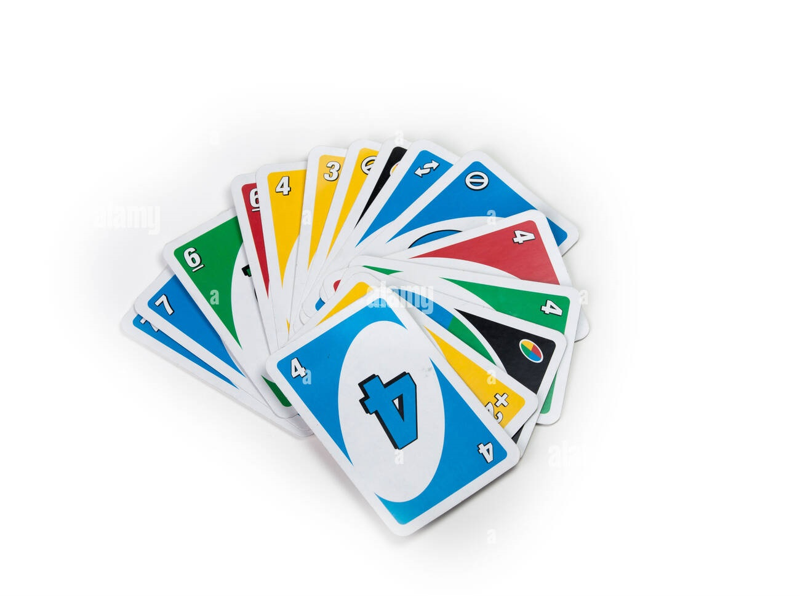
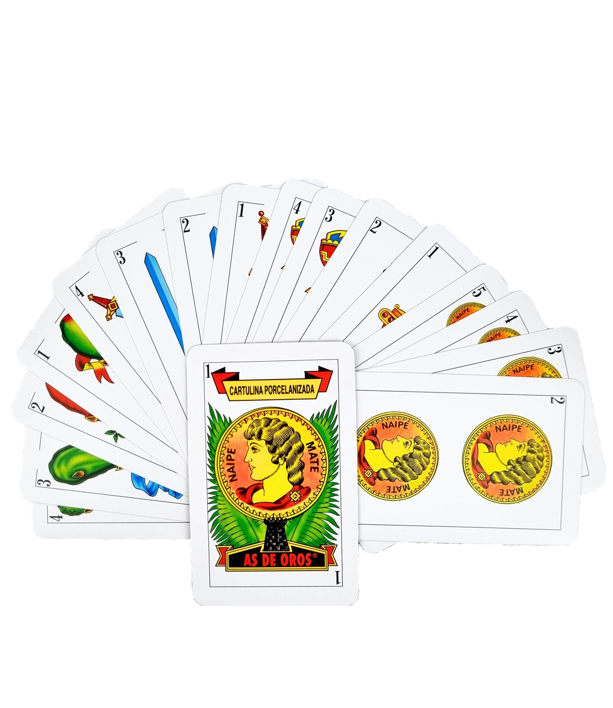
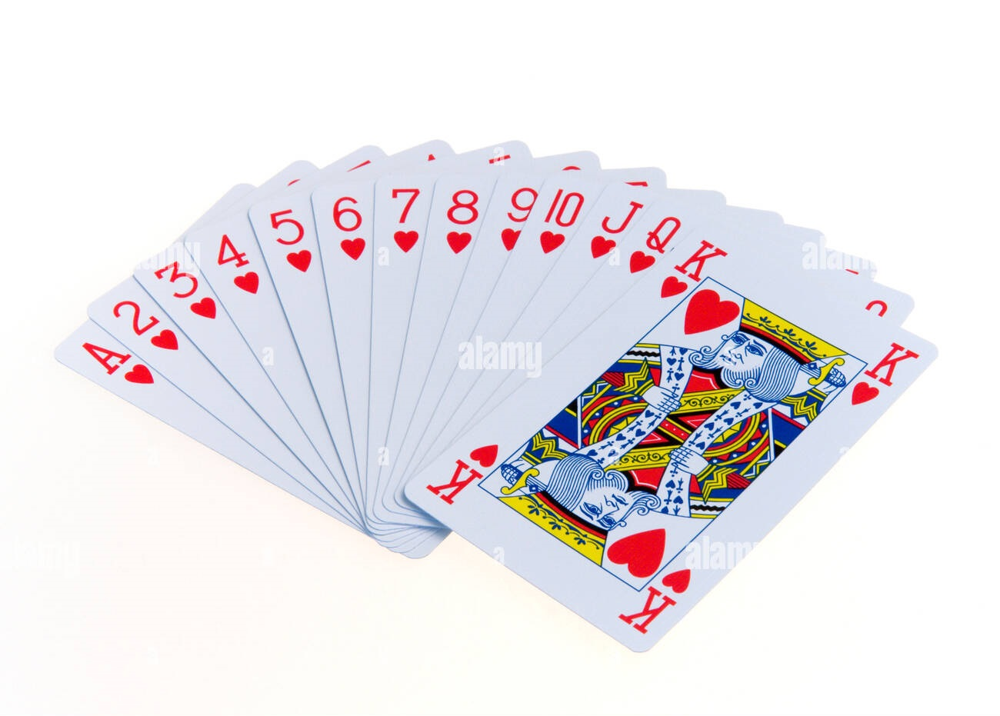

"INACAPLudi" es el club oficial de juegos de mesa y de rol de INACAP, autorizado por la DAE a nivel nacional. Nos dedicamos a reunir a estudiantes y entusiastas de todas las sedes para compartir nuestra pasión por los juegos, la estrategia y la creatividad.
En los eventos tanto locales como intersede, se invita a la comunidad inacapina a participar a través de una “entrada” que le da derecho a una
cantidad de partidas gratuitas. Además, hay tiendas invitadas en donde se ofrecen productos asociados a juegos de mesa y de rol.
Somos un espacio inclusivo y diverso donde todos son bienvenidos a sumergirse en la emoción y la camaradería que los juegos de mesa y de rol pueden ofrecer.
El clásico juego de cartas donde el objetivo es deshacerte de todas tus cartas.
Juego de cartas tradicional español que incluye juegos como la brisca o el mus.
Conjunto de juegos de cartas populares en países de habla inglesa como el póker o el bridge.
